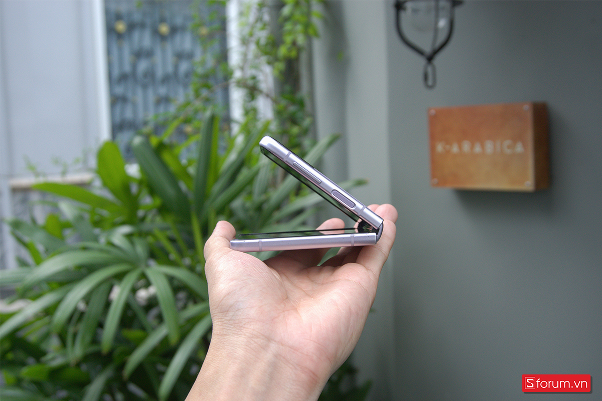
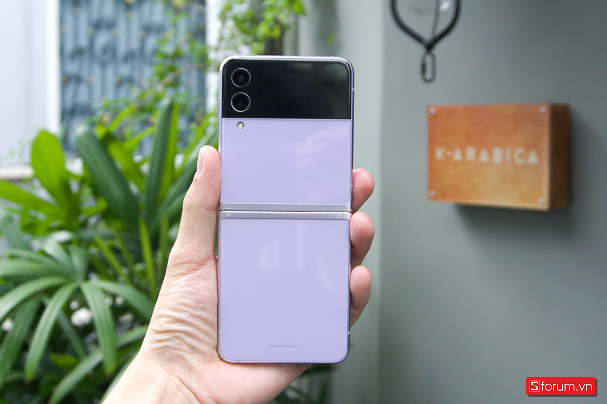
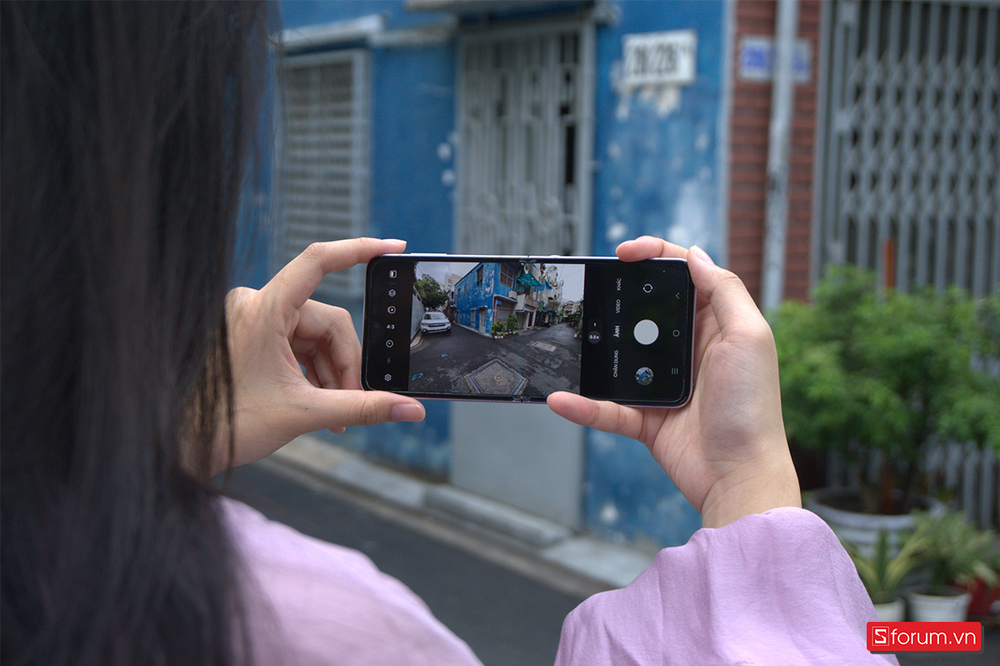
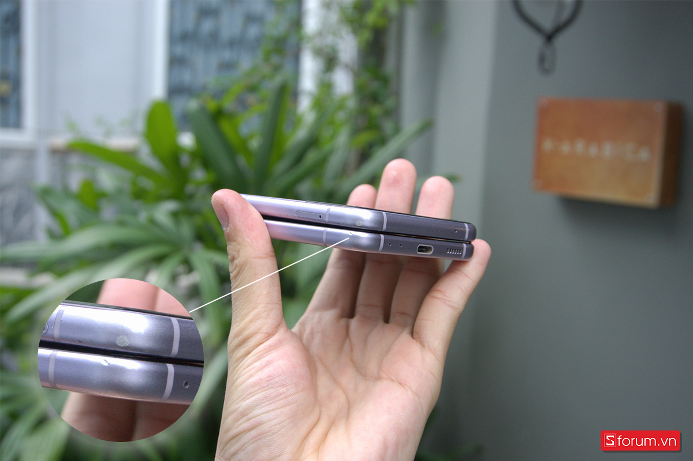
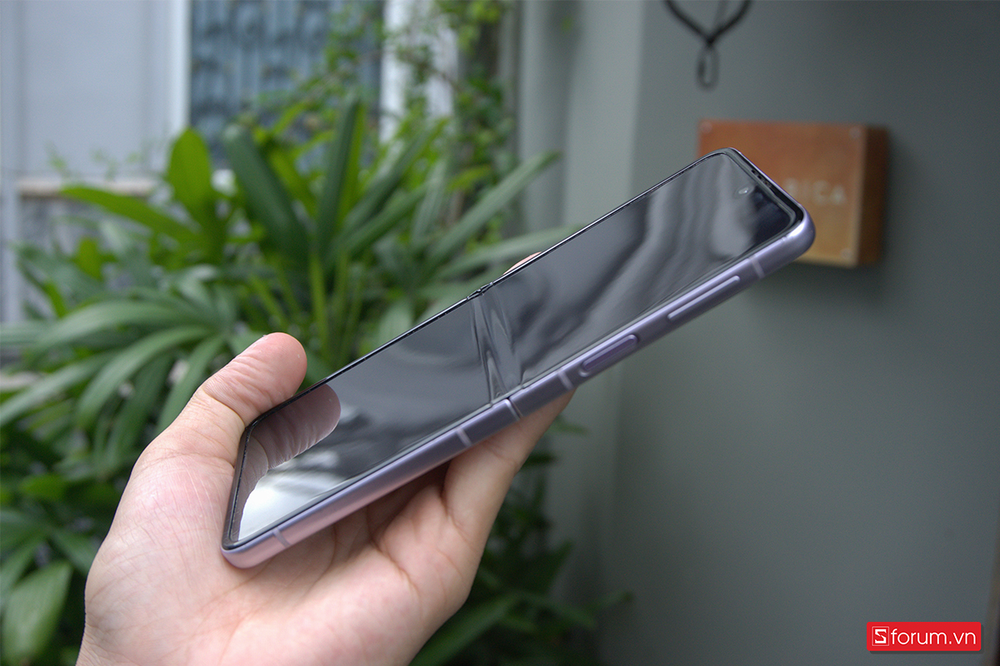
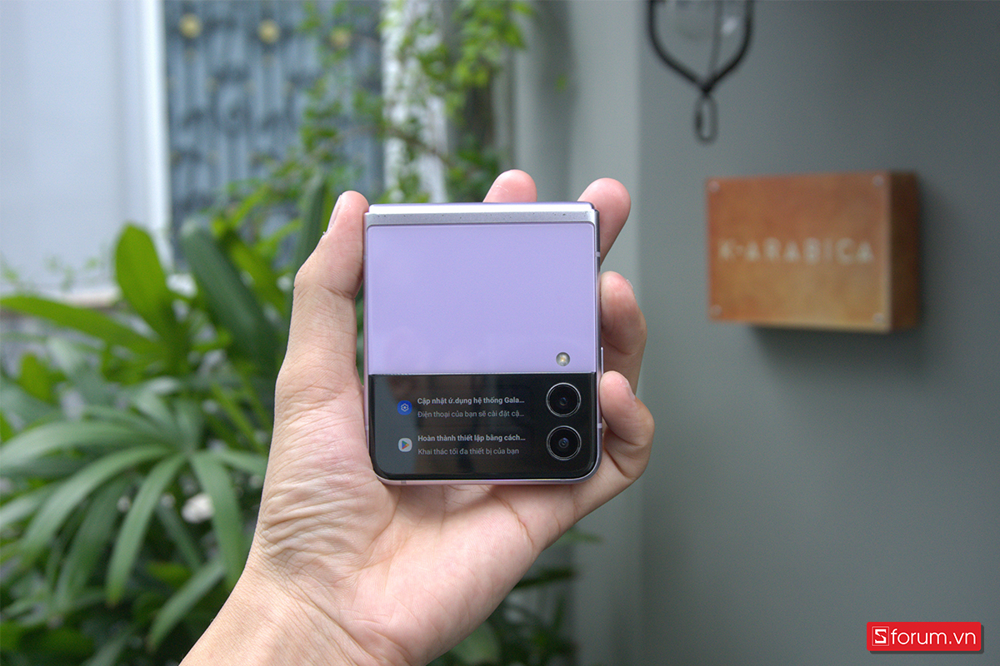

Samsung Galaxy Z Flip3 từng được xem là đỉnh cao của công nghệ thế nhưng chỉ mới sau vài năm ra mắt, máy đã không còn được nhiều người chú ý đến khi có khá nhiều nhược điểm.
Sau một thời gian dài trải nghiệm chiếc Galaxy Z Flip3, mình nhận ra rằng, giữa vòng xoáy của thời gian và công nghệ liên tục kéo dài, máy hiện đã không còn giữ được sự sắc sảo, linh hoạt như trước. Chiếc smartphone từng làm mình mê mẩn bởi thiết kế độc đáo và hiệu năng mạnh mẽ, nay đã dần xuống cấp, không còn phù hợp với nhu cầu sử dụng hiện tại của mình.
Ở bài viết này, mình muốn chia sẻ với bạn đọc những trải nghiệm đầy thực tế này. Điểm mạnh, điểm yếu, những thay đổi theo thời gian đều sẽ được đề cập một cách đầy đủ trong bài viết dưới đây. Hy vọng những điều mình chia sẻ sẽ giúp bạn có cái nhìn tổng quan hơn về chiếc smartphone này.
Đầu tiên, về thiết kế, chiếc Galaxy Z Flip3 vẫn giữ được nét độc đáo với cơ chế gập ngang. Tuy nhiên, lớp bản lề và cơ chế gập mở dường như đã xuống cấp, không còn mượt mà như những ngày đầu. Điều này có thể ảnh hưởng đến trải nghiệm người dùng, đặc biệt là với những ai thường xuyên phải mở gập thiết bị.
Về hiệu năng, Galaxy Z Flip3 vẫn xử lý tốt các tác vụ hàng ngày như lướt web, xem phim hay chơi game nhẹ. Tuy nhiên, với các tác vụ nặng hơn như chơi game 3D hoặc chỉnh sửa video, máy bắt đầu gặp khó khăn, đặc biệt là khi nhiệt độ máy tăng cao sau một thời gian dài sử dụng.
Pin của Galaxy Z Flip3 cũng là một điểm yếu lớn. Với dung lượng pin không quá lớn, máy khó có thể trụ được cả ngày với những người dùng có nhu cầu cao. Việc phải sạc pin nhiều lần trong ngày có thể khiến trải nghiệm sử dụng trở nên phiền phức.
Bên cạnh đó, camera của Galaxy Z Flip3 mặc dù vẫn cho ra những bức ảnh chất lượng, nhưng không thể so sánh với các dòng flagship mới hiện nay. Điều này là dễ hiểu khi công nghệ camera không ngừng phát triển và cải tiến.
Tóm lại, Galaxy Z Flip3 là một sản phẩm công nghệ đáng chú ý trong quá khứ, nhưng với sự phát triển không ngừng của công nghệ, máy đã không còn giữ được vị thế của mình. Nếu bạn đang cân nhắc mua một chiếc smartphone gập, hãy cân nhắc kỹ về nhu cầu và những nhược điểm của máy trước khi quyết định.
